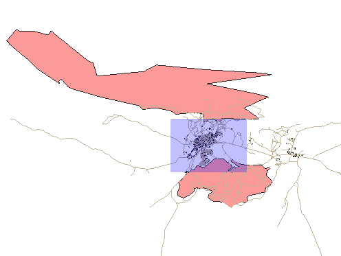
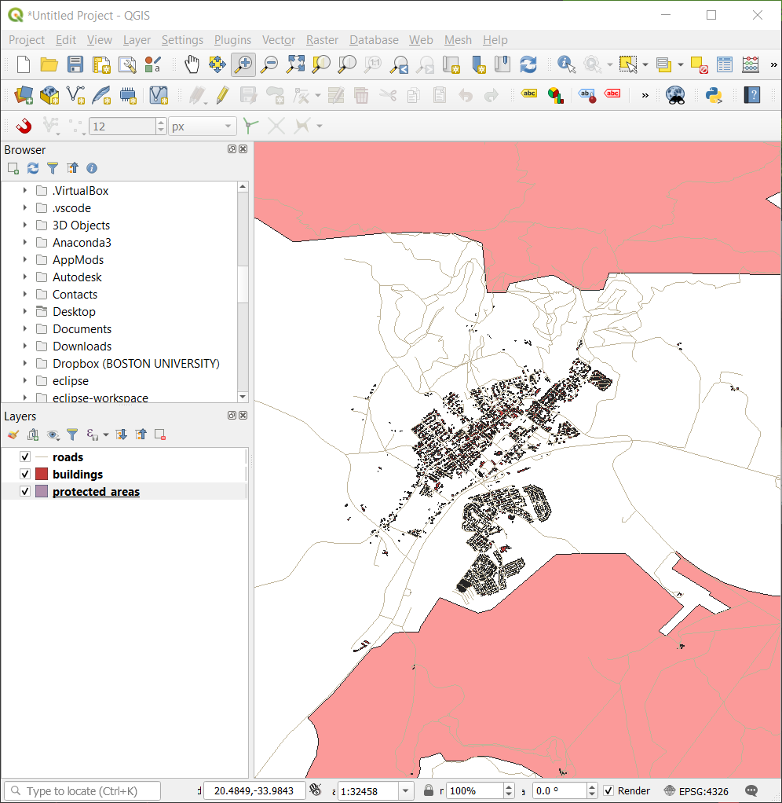

2.3. သင်ခန်းစာ- မြေပုံမြင်ကွင်းအတွင်း ညွှန်ပြခြင်း (Lesson: Navigating the Map Canvas)
ဤအပိုင်းတွင် မြေပုံမြင်ကွင်းအတွင်း ညွှန်ပြခြင်း (navigation) အတွက် အသုံးပြုမည့် အခြေခံ QGIS navigation tool များအကြောင်း အဓိကပါဝင်ပါမည်။ ထို tool များသည် layer များကို စကေးအမျိုးမျိုး၌ အမြင်ပိုင်းအရကြည့်ရှုစေနိုင်ပါသည်။
ဤသင်ခန်းစာ၏ ရည်မှန်းချက်- QGIS အတွင်း Pan နှင့် Zoom tool များကို မည်သို့အသုံးပြုရမည်ကို လေ့လာရန်နှင့် မြေပုံစကေးအကြောင်း လေ့လာရန်။
2.3.1. ★☆☆ လိုက်လုပ်ကြည့်ပါ- အခြေခံ Navigation Tool များ (Follow Along: Basic Navigation Tools)
မြေပုံမြင်ကွင်းအတွင်း မည်သို့ navigate ပြုလုပ်မည်ကို မလေ့လာမီတွင် ဤလက်တွေ့လေ့ကျင့်ခန်းအတွင်း သုံးစွဲနိုင်မည့် layer အချို့ကို ထည့်သွင်းကြည့်ရအောင်။
Project အလွတ်အသစ်တစ်ခုကိုဖွင့်ပြီး Create a Map တွင် လေ့လာခဲ့သော အဆင့်များအတိုင်း
protected_areas၊roadsနှင့်buildingslayer များကို project ထဲသို့ထည့်သွင်းပါ။ ရလာဒ်မြင်ကွင်း သည် အောက်တွင်ပြထားသောပုံ Fig. 2.2 အတိုင်း ဖြစ်သင့်ပါသည် (အရောင်များမတူညီခြင်းသည် အရေးမကြီးပါ)-
Fig. 2.2 ထည့်သွင်းထားသော Protected area များ၊ လမ်းများနှင့် အဆောက်အဦများ
ဦးစွာ Pan tool အသုံးပြုပုံကို လေ့လာကြည့်ရအောင်။
Map Navigation Toolbar ထဲတွင်
 Pan ခလုတ်ကို အသုံးပြုနိုင်စေရန် ဖွင့်ထားပေးပါ။
Pan ခလုတ်ကို အသုံးပြုနိုင်စေရန် ဖွင့်ထားပေးပါ။Mouse ကို မြေပုံမြင်ကွင်းဧရိယာ၏အလယ်သို့ ရွှေ့ပါ။
ဘယ်ဘက် click ကိုဖိနှိပ်ထားပြီး မြေပုံကိုရွှေ့ချင်သည့်လားရာအတိုင်း mouse ကို ဆွဲရွှေ့ပါ။
နောက်ထပ်အနေဖြင့် ထည့်သွင်းထားသော layer များကို zoom ချဲ့ကြည့်ပြီး အနီးကပ်ကြည့်ကြည့်ရအောင်။
Map Navigation Toolbar ထဲတွင်
 Zoom In ခလုတ်ပေါ်တွင် click နှိပ်ပါ။
Zoom In ခလုတ်ပေါ်တွင် click နှိပ်ပါ။အဆောက်အဦများနှင့် လမ်းများ အများဆုံးရှိနေသော ဘယ်ဘက်အပေါ်ဧရိယာသို့ mouse ကိုရွှေ့ပါ။
ဘယ်ဘက် click ကိုဖိနှိပ်ထားပါ။
ထို့နောက် mouse ကို ဆွဲရွှေ့ပါ၊ အဆောက်အဦနှင့်လမ်းများ များပြားသောဧရိယာကို လွှမ်းခြုံမိသော ထောင့်မှန်စတုဂံတစ်ခု ပေါ်လာလိမ့်မည် (Fig. 2.3)။
 Fig. 2.3 Zoom ချဲ့ကြည့်ခြင်း
ဘယ်ဘက် click ကို လွှတ်လိုက်ပါ။ ထောင့်မှန်စတုဂံအတွင်း ဧရိယာကို zoom ချဲ့ပေးပါလိမ့်မည်။
 Zoom ချုံ့ရန်
 Zoom Out ခလုတ်ကိုရွေးချယ်ပြီး Zoom ချဲ့ခြင်းတွင် ပြုလုပ်ခဲ့သည့်အတိုင်း လုပ်ဆောင်ပါ။
Zoom Out ခလုတ်ကိုရွေးချယ်ပြီး Zoom ချဲ့ခြင်းတွင် ပြုလုပ်ခဲ့သည့်အတိုင်း လုပ်ဆောင်ပါ။
Pan လုပ်ခြင်း ၊ zoom ချဲ့ကြည့်ခြင်း သို့မဟုတ် zoom ချုံ့ကြည့်ခြင်း ပြုလုပ်တိုင်း QGIS သည် ထိုမြင်ကွင်းများကို history (မှတ်တမ်း) တစ်ခုထဲတွင် သိမ်းဆည်းပေးထားပါသည်။ ထို့ကြောင့် ယခင်ကြည့်ရှုခဲ့သော မြင်ကွင်းတစ်ခုကို နောက်ပြန် ပြန်ခေါ်နိုင်စေပါသည်။
Map Navigation Toolbar ထဲတွင်
 Zoom Last ခလုတ်ကိုနှိပ်ခြင်းဖြင့် ယခင်ကကြည့်ရှုခဲ့သော မြင်ကွင်းကို ပြန်ရောက်စေပါသည်။
Zoom Last ခလုတ်ကိုနှိပ်ခြင်းဖြင့် ယခင်ကကြည့်ရှုခဲ့သော မြင်ကွင်းကို ပြန်ရောက်စေပါသည်။ Zoom Next ခလုတ်ကိုနှိပ်ခြင်းဖြင့် history ထဲတွင် နောက်ထပ်လာမည့်မြင်ကွင်းဆီသို့ ရွှေ့ပေးပါသည်။
Zoom Next ခလုတ်ကိုနှိပ်ခြင်းဖြင့် history ထဲတွင် နောက်ထပ်လာမည့်မြင်ကွင်းဆီသို့ ရွှေ့ပေးပါသည်။
တခါတရံတွင် data များကို ရှာဖွေကြည့်ရှုပြီးလျှင် ထည့်သွင်းထားသော layer အားလုံး၏ extent ကို မြင်ရနိုင်ရန် မြင်ကွင်းကို reset (နဂိုမှပြန်စ) ပြုလုပ်ပေးရန် လိုအပ်ပါသည်။ Zoom out tool ကို အကြိမ်များစွာသုံးပြီး လုပ်နေမည့်အစား QGIS တွင် ထိုသို့လုပ်ဆောင်ရန်အတွက် ခလုတ်တစ်ခုပါရှိပါသည်။
 Zoom Full Extent ခလုတ်ပေါ်တွင် နှိပ်ပါ။
Zoom Full Extent ခလုတ်ပေါ်တွင် နှိပ်ပါ။
Zoom အချုံ့/အချဲ့ ပြုလုပ်တိုင်း Status bar (အခြေအနေပြဘား) ထဲရှိ Scale တန်ဖိုးသည် ပြောင်းလဲသွားသည်ကို သတိထားကြည့်ကြည့်ပါ။ Scale တန်ဖိုးသည် မြေပုံစကေးကို ကိုယ်စားပြုပါသည်။ ယေဘုယျအားဖြင့် : ၏ညာဘက်ဂဏန်းသည် မြေပုံမြင်ကွင်းထဲတွင် မြင်ရသော အရာဝတ္ထုသည် မြေပြင်ရှိ တကယ့်အရာဝတ္ထုထက် အဆမည်မျှသေးငယ်သည်ကို ကိုယ်စားပြုပါသည်။

ဤ field တွင် ကိုယ်တိုင်ရိုက်ထည့်၍လည်း မြေပုံစကေးကို သတ်မှတ်ပေးနိုင်ပါသည်။
Status bar ထဲတွင် Scale စာသား field ပေါ်တွင် click နှိပ်ပါ။
50000ဟုရိုက်ထည့်ပြီး Enter ကိုနှိပ်ပါ။ ထိုသို့လုပ်ခြင်းဖြင့် မြေပုံမြင်ကွင်းထဲရှိ feature များကို ရိုက်ထည့်ထားသောစကေးအတိုင်း ပြန်ရေးဆွဲပေးလိမ့်မည်ဖြစ်သည်။နောက်တနည်းအနေဖြင့် ကြိုတင်သတ်မှတ်ထားသော မြေပုံစကေးများကို ကြည့်ရှုနိုင်ရန် Scale field ၏ option မြားပေါ်တွင် click နှိပ်ပါ။

1:5000 ကိုရွေးချယ်ပါ။ ထိုသို့လုပ်ခြင်းသည်လည်း မြေပုံမြင်ကွင်းထဲရှိ မြေပုံစကေးကို update လုပ်ပေးပါလိမ့်မည်။
ယခုဆိုလျှင် သင့်အနေဖြင့် မြေပုံမြင်ကွင်းအတွင်း အခြေခံ navigation များကို သိရှိသွားပြီ ဖြစ်သည်။ Navigation နှင့်ပတ်သက်သော အခြားနည်းလမ်းများအကြောင်း လေ့လာရန် အသုံးပြုသူလမ်းညွှန်ထဲရှိ Zooming and Panning အပိုင်းကို လေ့လာကြည့်ပါ။
2.3.2. နိဂုံးချုပ် (In Conclusion)
မြေပုံမြင်ကွင်းကို မည်သို့ ညွှန်ပြခြင်းလုပ်ဆောင်ရမည်ကို သိခြင်းသည် အရေးကြီးပါသည်။ အဘယ့်ကြောင့်ဆိုသော် ၎င်းသည် layer များကို ရှာဖွေခြင်းနှင့် အမြင်အရ စစ်ဆေးခြင်းများလုပ်ဆောင်နိုင်သောကြောင့်ဖြစ်သည်။ ကနဦး data ဖော်ထုတ်ခြင်း သို့မဟုတ် spatial analysis (တည်နေရာဆိုင်ရာလေ့လာဆန်းစစ်ခြင်း) တစ်ခု၏ ရလာဒ်ကို အတည်ပြုခြင်း အတွက် ၎င်းကိုအသုံးပြုနိုင်ပါသည်။